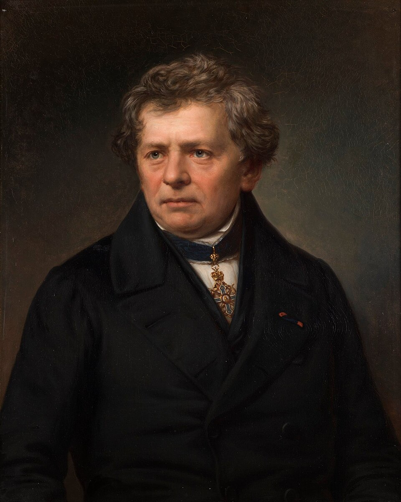

Georg Simon Ohm nasceu em uma família simples em Erlangen, Baviera, atual Alemanha, no dia 16 de março de 1789. Seu pai, Johann Wolfgang Ohm, era serralheiro e mestre mecânico; sua mãe, Maria Elizabeth Beck, era filha de um alfaiate. Seus pais tiveram sete filhos, mas somente Ohm e seu irmão, Martin Ohm, chegaram à fase adulta, sendo Martin um exímio matemático.(EBSCO, 2022)
Em 1805, Ohm ingressou na Universidade de Erlangen. Seu professor, Karl Christian von Langsdorf, um renomado matemático, engenheiro alemão, geólogo e naturalista, ficou impressionado com Ohm e seu irmão, comparando-os à família Bernoulli, uma família de estudiosos localizada na Basileia, Suíça. Durante a universidade, Ohm preferia passatempos como sinuca, dança e patinação no gelo em vez dos estudos. Com esse comportamento, após três semestres, seu pai fez com que ele deixasse a universidade e arrumasse um emprego.(EBSCO, 2022)
Em 1806, Ohm tornou-se professor na escola de Gottstadt bei Nydau, na Suíça. Durante seu tempo livre, passou a estudar obras de grandes matemáticos e, com a vontade de aprender restaurada, deixou o emprego em 1809 e tornou-se tutor particular em Neuchâtel, também na Suíça, para se dedicar ainda mais aos estudos. Ohm voltou à Universidade de Erlangen e adquiriu o doutorado em 1811. Trabalhou como professor na universidade mesmo sem receber salário por três semestres. Em 1813, conseguiu um emprego como professor de física e matemática em uma escola em Bamberg. Não satisfeito com o emprego atual, acreditava que poderia alcançar algo melhor. Então, escreveu um livro didático de geometria, mas permaneceu trabalhando na escola até ser fechada em 1816.(EBSCO, 2022)
Após a escola de Bamberg ser fechada, Ohm tornou-se professor de matemática e física no ginásio jesuíta de Colônia, Alemanha, em 1817. Com uma vasta quantidade de equipamentos de alta qualidade ao seu redor, Ohm iniciou experimentos relacionados à eletricidade e ao magnetismo, o que o levou a aprofundar seus estudos na área de circuitos elétricos.(EBSCO, 2022)
Em seu tempo livre, Ohm lia as obras de renomados matemáticos franceses, como Joseph-Louis Lagrange, Joseph Fourier e Jean-Baptiste Biot. Em 1820, um físico e químico dinamarquês Hans Christian Ørsted descobriu que a eletricidade e o magnetismo possuem correlação, já que correntes elétricas criam campos magnéticos, algo que provavelmente inspirou Ohm a se aprofundar nesse assunto.(EBSCO, 2022)
Em 1825, os níveis acadêmicos do ginásio em que Ohm ensinava estavam caindo, e ele mudou sua forma de realizar experimentos, continuando a trabalhar, pois desejava se tornar professor em uma universidade renomada. Deixou de fazer experimentos apenas por gosto e passou a desenvolvê-los com a finalidade de publicação, pois acreditava que isso o ajudaria a alcançar um patamar mais elevado na carreira como professor. Seu primeiro artigo científico foi publicado em 1825 no qual relatava a redução da força eletromagnética em fios conforme seu comprimento se tornava maior. Ohm também apresentou uma fórmula matemática nesse artigo, a qual foi posteriormente corrigida e publicada em um novo artigo. Após a revisão, sua fórmula passou a ser confirmada por experimentos e aplicada a diversos fenômenos do eletromagnetismo.(EBSCO, 2022)
A Lei de Ohm é uma fórmula que descreve a relação entre tensão, resistência e corrente elétrica, contribuindo não só nos trabalhos de Ohm, mas também de outros cientistas que trabalhavam com eletricidade galvânica ou corrente contínua. Em 1827, Ohm publicou a obra Die galvanische Kette, mathematisch bearbeitet (O Circuito Galvânico Investigado Matematicamente), na qual ele apresenta a conhecida fórmula matemática I = V / R. Ou seja, a corrente elétrica (I) que percorre um condutor é diretamente proporcional à tensão (V) e inversamente proporcional à resistência (R).(EBSCO, 2022)
A primeira parte de sua obra explica a matemática por trás de seus experimentos, que utilizavam fios de diferentes comprimentos para comprovar sua fórmula. Apesar de sua precisão, seu trabalho foi tratado com desprezo, pois a maioria dos físicos alemães acreditava que não era possível utilizar matemática em sua área. Portanto, Ohm renunciou ao cargo de professor em março de 1828. Seu trabalho só seria reconhecido posteriormente.(EBSCO, 2022)
Em 1833, Ohm tornou-se professor na escola politécnica de Nuremberg. Após dois anos, passou a exercer a chefia do departamento de matemática da Universidade de Erlangen e assumiu o cargo de inspetor de educação científica da Baviera. Em 1841, a Royal Society de Londres concedeu a Ohm a Medalha Copley, além de torná-lo membro. Posteriormente, ele recebeu títulos de membro de várias outras associações científicas. Em 1849, tornou-se professor da Universidade de Munique, Alemanha, onde assumiria a cátedra de física futuramente. Para Ohm, essa nomeação em Munique foi como a realização de um sonho.(EBSCO, 2022)
Ao final de sua vida, Ohm começou a se envolver com acústica e óptica. Seu trabalho em acústica foi questionado por August Seebeck, um físico renomado. Ohm estava escrevendo um livro didático sobre óptica quando acabou morrendo em Munique, no dia 6 de julho de 1854. Após sua morte, a unidade de medida internacional para resistência elétrica passou a ser Ohm, uma homenagem ao seu nome.(EBSCO, 2022)
A utilização de matemática por Ohm para comprovar o seu ponto sobre resistência elétrica revolucionou como os cientistas da época e os físicos alemães, em particular, compreendiam a física. Antes de Ohm, a física era estudada sem o uso de métodos matemáticos. Seus projetos foram inicialmente recusados, mas depois percebeu-se que a matemática por trás da fórmula da Lei de Ohm manteve a ideia de que a matemática e a física estão relacionadas.(EBSCO, 2022)
A Lei de Ohm é constantemente utilizada na área de circuitos elétricos, auxiliando os engenheiros a compreender como tensão, resistência e corrente elétrica se comportam em larga escala, mas também pode ser aplicada em níveis atômicos, como em pesquisas sobre o comportamento elétrico de partículas em escala microscópica. Assim, estudos posteriores demonstraram a presença da Lei de Ohm em fios de silício com somente um átomo de altura e quatro de largura.(EBSCO, 2022)

(George Simon Ohm)
Calculadora